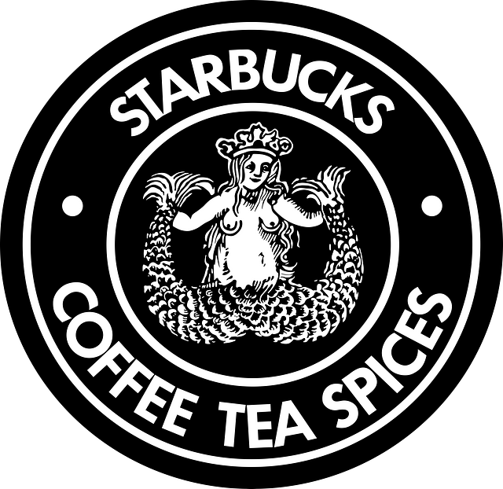
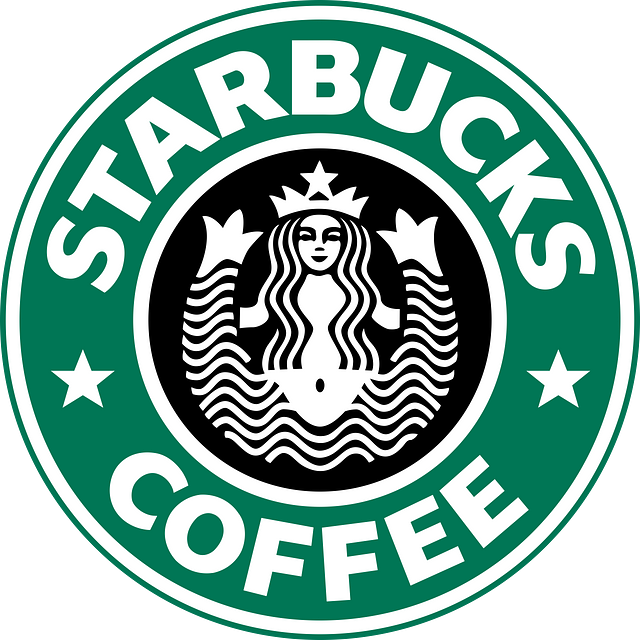
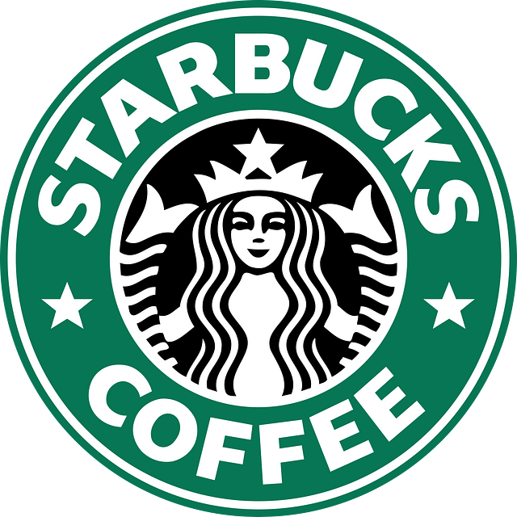
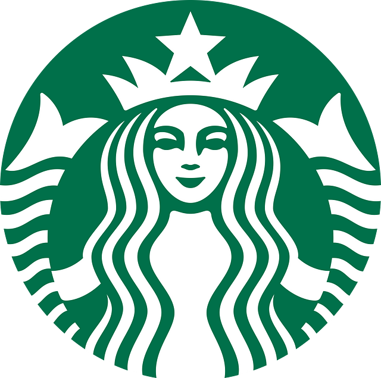

Starbucks's logo became simpler as the company grew. By keeping its siren while changing the colours and lettering, the brand created a modern identity that still connects to its history.
Starbucks began in Seattle in 1971, founded by Jerry Baldwin, Gordon Bowker and Zev Siegl. It originally sold coffee beans, tea and spices for customers to take home.
Today, Starbucks sells drinks, food and merchandise through its international coffeehouse business. Its audience has grown from local coffee buyers to people looking for coffee, convenience or a place to meet.

Specialty retailer

Coffeehouse expansion

Closer view of the siren

Symbol without words
The original logo used a crowned, twin-tailed siren inside a circular seal. The outer ring included the Starbucks name and the words Coffee, Tea and Spices. The detailed illustration gave the brand a traditional look that suited a specialty store selling coffee beans.
In 1987, Starbucks changed from brown to green and simplified the siren. The wording became Starbucks Coffee. Heavy uppercase sans-serif letters made the name easier to notice. The cleaner design helped Starbucks appeal to a wider coffeehouse audience.
The siren became larger and her face moved closer to the viewer. The green ring, black centre and white details stayed similar. The larger face created a clearer visual focus and made the logo easier to recognize.
In 2011, Starbucks removed the name, the word Coffee and the outer ring. The siren became the main focus and the logo used only green and white. The wordless design showed that Starbucks was already recognizable around the world and could represent more than coffee.
The 1987 redesign replaced brown with green, simplified the siren and shortened the wording to Starbucks Coffee. I think this change was effective because the bold letters and simpler shapes are easier to recognize on cups and signs.
The 2011 redesign removed the company name and made the siren much larger. This made the logo simpler and easier to recognize at a glance. It also works better internationally because it does not depend on English words.
I think the 2011 version best represents Starbucks today. Its larger siren creates a clear focus, while the green-and-white contrast makes it easy to recognize. The design is simple and flexible, although older versions explained the business more clearly to new customers.
Starbucks — Our Original Store
Starbucks — Inspired by Italy, Reimagined in Seattle
Starbucks — The Evolution of Our Logo